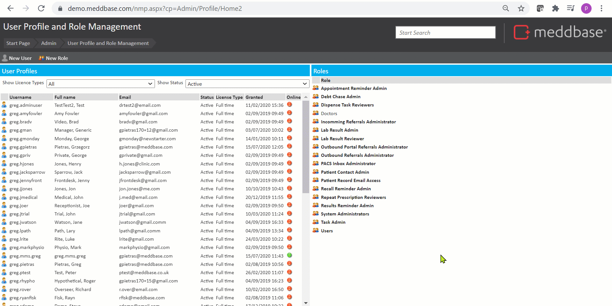

Role groups within Meddbase defines the security permissions that user have, thus granting or denying access to multiple users that interact with different areas of your chamber and the information that is held there.
This article :
Before you can add a user or group of users to a Role group, there are some important concepts to understand and steps to take. These are outlined in the articles noted below.
The process of adding users to a Role group is very simple. To add a user or group to a Role group:-
The user or group will move to the Role Members section and become a member of this Role group.
A user can belong to more than one Role group.
The process of removing an existing user from a Role group is similar to Adding a user to a Role group described above.
To remove a user or group from a Role group:
They will be removed from the list and no longer be a member of this Role group.
This short demo shows how to add and remove users as Role members for roles.
